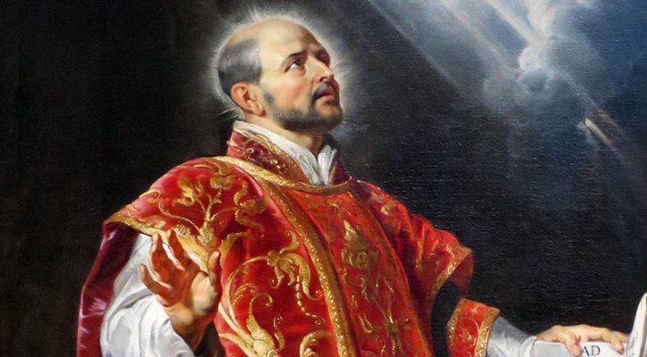

Ignatius of Loyola
Founder of the Society of Jesus

College Founder
Sri Y.S. Raja Reddy

St. Ignatius of Loyola, the founder of the Society of Jesus, was born in 1491, as the last child of a large Basque family of Spain. The name Loyola came from the ancestral castle that was the family heritage of St. Ignatius. According to the traditions of his family, Ignatius was trained for arms and to the etiquette of court life. He enlisted himself in the border wars with France and was badly wounded in battle. As he lay convalescing at Loyola, he read the Gospel narratives and the lives of Saints and was inspired to follow Christ by giving up all worldly ambitions and trappings of power and embracing a life of poverty, sacrifice, and service after the example of his saintly mentors. He began his new life at the age of 31. He spent a year of severe penance and intense prayer in a solitary cave on the banks of the river Cardoner near the town Manresa.
He recorded his experiences in a book called "The Spiritual Exercises" which became the soul and center, the rule and character of every Jesuit who came thereafter. Reflecting on the crisis in the church of his time, he felt that the need of the hour was for learned and holy priests, free of greed and ambition and ready to serve the poor and to give a witness to the love of Christ for human beings.
To achieve this objective, he set himself in right earnest to study from grammar school to college and university in the various Spanish centers of learning and finally took his Master's Degree from the Sorbonne University, Paris. At the same time, he won a group of brilliant and like-minded university men (one of whom was St. Francis Xavier), molded them by the Spiritual Exercises, and welded them into a religious fraternity which became the Society of Jesus, or Jesuits, as they popularly came to be known in the course of time.
Jesuits are the members of the Society of Jesus, a worldwide organization of religious men, numbering above 20,000 spread all over the world, of whom over 3,000 are working in 20 Provinces of India. In Andhra Pradesh alone, there are about 200 Jesuits working in schools and colleges, youth services and social work centers, in parishes and in mission outreach programs, and in almost every form of service to humankind.
This college was founded by Sri. Y.S. Raja Reddy Educational Trust in 1979 and was affiliated to Sri Venkateswara University. Late Chief Minister of Andhra Pradesh Sri. Y. S. Raja Sekhara Reddy (Alumni of Andhra Loyola College, Vijayawada) approached Loyola (Jesuit) Fathers in 1993 to take over the institution. From 1993 to 1998, the college was administered by the Jesuits on an experimental basis. Then they decided to take over the institution.